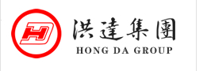

返回首页
设为主页
加入收藏


太原洪达（集团）有限公司创立于1987年，并于1994年由太原市工商局作为太原市成立民营集团的试点单位，批准注册成立“太原洪达集团”，成为太原市第一家正式注册的民营集团公司。
29年来洪达集团已发展为一个集商业零售（大卖场+便利店）、汽车服务、汽车金融、酒店管理为一体的大型综合企业。2013年至2015年进入全国民营企业500强，成为山西最具影响力的企业之一。
集团旗下零售版块包括山西山姆士超市有限公司和山西就上便利店连锁经营管理有限公司，零售版块年总销售额近7亿元。
山西山姆士超市有限公司成立于1999年，由洪达集团全资投建，目前在山西太原有4家经营面积12000平米以上的大卖场，分布于太原市各主要城区，主营生鲜、食品、百货等系列商品，平均年销售额近6亿元，其中日用化妆品及家庭清洁类销售近亿元。
山西就上便利店连锁经营管理有限公司成立于2015年3月，以公司直营及特许加盟模式拓展经营便利门店。自2015年5月第一个社区便利超市正式开业，目前已开业的社区生活超市、优品便利店17家，经营面积为50-3000平米。已签约正在筹备开业的有4家。 计划在未来三年内，增加100家便利店和40家社区店，便利店年销售额达1亿元。
公司战略目标，以打造最优顾客体验店为目标，努力提升顾客满意度和单店竞争能力，使山姆士成为顾客更加喜爱的购物场所。